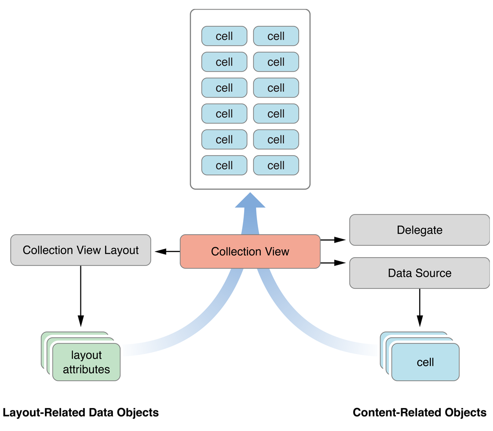
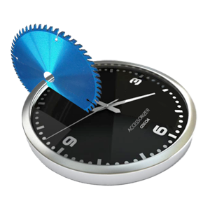
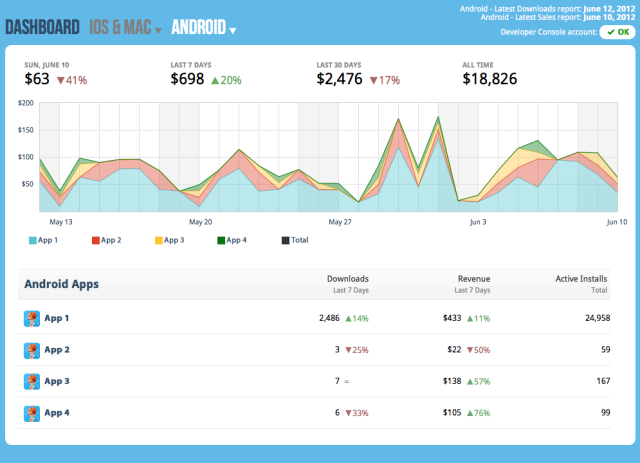
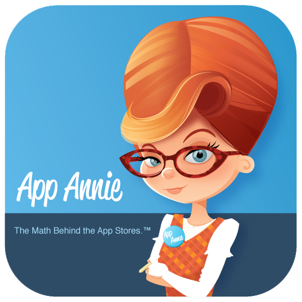

# Beskrivelse Få en pangstart på din karriere som app-utvikler. BEKK holder tre-delt iOS-kurs, der du vil få den grunnleggende kunnskapen som skal til for å lage en iOS-app fra bunnen av. * Del 1 gir introduksjon til Objective-C, iOS platformen og verktøy. Det blir holdt presentasjon og det skal kodes. * Del 2 går mer i dybden på temaene i del 1 og vi vil lage en twitter-aktig app. * Del 3 - mer om iOS og verktøy. Deretter hjelp av veilederne til egen app eller utvikle videre på twitter appen. Krav: Mac med Xcode Oppsett før man dukker opp på del 1: Installert: Xcode (4 eldste, men jo nyere jo bedre, 4.5 er siste) Åpnet Xcode for å vite at det starter Om man får tid se kjapt på: http://cocoadevcentral.com/articles/000081.php --- .front-page # iOS-kurs --- # Tredelt kurs * Del 1 - Introduksjon * Objective-C * iOS * Verktøy * Koding og blir kjent med verktøyene * Del 2 - Mer avansert * Objective-C * iOS - Standardkomponenter * Koding - Vi skal lage en twitter aktig app * Del 3 - Lage en app * iOS - Standardkomponenter * Debugging * Verktøy og testing, alternativer og forslag * Bøker og ressurser * Utvikle på egen app eller forsette med twitter klone --- .middle.center # Hvem er vi? --- .middle.center # Del 1 --- .agenda # Agenda * Objective-C * iOS * Verktøy * Koding og bli kjent med verktøyene --- .middle.center # Objective-C --- # Hva er Objective-C? * Objective-C er ett sett med utvidelser til programmeringsspråket C * Man kan blande Objective-C med C og C++ (Obj++) * Objektorientert, mer om Apple sin tolkning av dette finner du på: * [OOP (http://goo.gl/5ABv6)](http://goo.gl/5ABv6) * Enkelt språk, men uvant syntax * Dynamisk typet runtime --- # C på så få minutter som mulig * "Primitivt" i forhold til nyere språk * Ikke objektorientert * Strings er et ukjent fenomen * Ingen garbage collection * Allokere minne før man bruker det * Deallokere minne når man er ferdig * Lite overhead - utrolig kjapt .c int main() { int this_is_a_number; printf( "Vennligst skriv inn ett nummer: " ); scanf( "%d", &this_is_a_number ); printf( "Du skrev inn %d", this_is_a_number ); getchar(); return 0; } --- # Objective-C Klasser og Objekter <!--- Som i mange andre programmeringsspråk så lager man egne objekter ved hjelp av klasser og klassene igjen inneholder andre objekter. I tillegg til å holde på sine instans variabler, så inneholder klassene forskjellige metoder. I Objective-C bruker man stor forbokstav på klasser, men små bokstaver på instanser av denne klassen. Det noe av metode og instans variable definering blir gjort i en .h fil, men all implementasjonen blir gjort i en .m fil. NSObject er en root klasse som alle andre klasser arver fra. # Objective-C Objekter Da Objective-C er objektorientert, vil de samme prinsippene gjelde her som i andre objektorienterte språk, som for eksempel Java. Objektene har data og metoder for å bruke dataen, den dataen som blir påvirket ligger i såkalte instans-variabler (Ivars). Da språket er dynamisk typet, kan alle objekter refereres til ved hjelp av 'id'. For eksempel: .objective-c id ettObjekt Det betyr også, at man må vœre litt mer varsom enn i java, da man ikke får kompileringsfeil ved å sende inn en feil type til en metode. --> * Man lager egne objekter ved å definere klasser og lage instanser av disse * Klassene inneholder som regel instans-variabler for å ta vare på klassens data * Manipulering av instans-variablene skjer ved hjelp av metoder * Stor forbokstav for klasser og små for instanser av denne klassen * En klasse består av en .h-fil og en .m-fil * h.-filen definerer som regel instans variablene og public metoder * m.-filen inneholder all implemtasjon --- # Objective-C instansvariabler (ivar) <!-- I Objective-C er alle instans variabler interne (@protected) for klassen de er definert i. Dermed er staten til instans-variablene kun tilgjengelig via klassens metoder eller en klasse som har arvet av den klassen der instans-variablene er definert. Man kan overstyre dette ved å bruke 'scope directives'. --> * Alle instansvariabler deklarert i .h-filen er automatisk interne (@protected) * Kan overstyres ved hjelp av 'scope directives' .objective-c /* Instans variabelen er bare tilgjengelig inne i klassen som deklarerer den */ @private NSString * ettObjekt; /* Instans variabelen er tilgjengelig i klassen som deklarer den og for klasser som arver av den klassen */ @protected NSString * ettObjekt; /* Instans variabelen er tilgjengelig for alle */ @public NSString * ettObjekt; /* Kun tilgjengelig for klasser som ligger i ett og samme image. */ @package NSString * ettObjekt; --- # Klasse- og instansmetoder * Instans-metoder defineres på følgende måte .objective-c - (id)init /* Gjør initialiseringen som kreves av et objekt for å bli klart */ * Klasse-metoder defineres på følgende måte .objective-c + (id)alloc /* Allokerer en plass i minne til objektet */ * Opprette instans av en klasse gjøres på følgende måte: .objective-c Person *person = [[Person alloc] init]; * `[[Person alloc] init]`, og alle metoder som starter med `init` kan sees på som konstruktører --- # Objective-C Message Passing #1 * I Objective-C kaller man ikke metoder på objekter, men sender en beskjed * Navngir ikke selve metoden, men hver parameter. * Skriver metoder mer som om man snakker til objektet .objective-c - (id)initWithFirstName:(NSString *)firstname andSurname:(NSString *)surname; - (void)setAge:(int)age; - (NSString *)fullName; * Som fører til slike morsomheter som denne .objective-c - (id)initWithBitmapDataPlanes:(unsigned char **)planes pixelsWide:(NSInteger)width pixelsHigh:(NSInteger)height bitsPerSample:(NSInteger)bps samplesPerPixel:(NSInteger)spp hasAlpha:(BOOL)alpha isPlanar:(BOOL)isPlanar colorSpaceName:(NSString *)colorSpaceName bitmapFormat:(NSBitmapFormat)bitmapFormat bytesPerRow:(NSInteger)rowBytes bitsPerPixel:(NSInteger)pixelBits --- # Objective-C Message Passing #2 Java .java Person person = new Person("Jan", "Johansen"); person.setAge(31); String fullName = person.getFullName(); Objective-C .objective-c Person *person = [[Person alloc] initWithFirstName:@"Jan" andSurname:@"Johansen"]; [person setAge:31]; NSString *fullName = [person fullName]; --- # Terminologi * Message expression .objective-c [person setAge:25]; * Message .objective-C setAge:25 * Selector .objective-c setAge: * Method - Koden som vil bli kjørt basert på meldingen .objective-c - (void)setAge:(int)age { // Do something with age } --- # Objective-C ivar og properties #1 * Properties er en effektiv måte og lage en get og set metode for instansvariabler (ivars) * I nyere Objective-C trenger man ikke definere ivars om man definerer properties, da de blir automatisk laget om det ikke finnes en matchende ivars til property navnet .objective-c @property(nonatomic, strong) NSString *firstName; // _firstName @property(nonatomic, strong) NSString *surname; // _surname @property(nonatomic) int age; // _age /* Det blir nå automagisk laget settere og gettere */ Merk at `@synthesize attr` ble brukt i eldre Objective-C for at selve metoden skulle bli generert --- # Objective-C ivar og properties #2 Kan styre oppførselen til en property ved hjelp av attributter * Tilgjengelighet - `readonly` - kun getter - `readwrite` - både getter og setter (default) * Hvordan setteren skal fungere - `strong` - denne klassen eier propertien, og styrer minnehåndtering - `weak` - denne klassen eier _ikke_ propertien, og styrer derfor _ikke_ minnehåndteringen - `copy` - en kopi av objektet vil bli brukt ved assignment - `assign` - setter verdien direkte. Brukes ofte på primitiver * Trådsikkerhet - `atomic` - Default, men bør brukes skjelden da den er tregere. Har tilleggsfunksjonalitet som gjør at man alltid returnerer ett helt objekt når flere tråder snakker med setter og getter - `nonatomic` - sier seg kanskje selv, motsatte av atomic --- # Dot Syntax * En alternativ måte å kalle tilgangsmetoder (accessor methods, get, set) .objective-c NSString *fullName = person.fullName; person.age = 25; person.sibling.age = 27; * i stedet for .objective-c NSString *fullName = [person fullName]; [person setAge:25]; [[person sibling] setAge:27]; --- # Dynamisk eller statisk? * Først og fremst, _hva er disse * overalt?_ * Det er hvordan man definerer en peker til minnet * Ved bruk av `id` bruker man ikke * da den har en peker automatisk * Objective-C har en dynamisk typet runtime, men man kan velge å bruke statiske typer når man skriver koden. .objective-c id person = [[Person alloc] init]; /* dynamisk typet */ Person *person = [[Person alloc] init]; /* statisk typet */ int age = 3; /* primitiv */ * Statisk typing er kun til for å gi deg typesikkerhet ved kompilering; alle spor forsvinner etter kompilering, foruten primitiver som ikke er pekere og derfor statiske * `id` er definert som en pointer til hva som helst * Hvis vi ser på initializerne ser vi at de _alltid_ returnerer `id`. .objective-c - (id)initWithFirstName:(NSString *)firstname andSurname:(NSString *)surname andAge:(int) age; <!--* Runtime bryr Objective-C seg ikke om statiske typer * Statiske typer gir typesjekking compile time--> --- # Nil * I Objective-C bruker man `nil`, i stedet for `null` som i mange andre språk * Om man kaller en metode på nil får man bare nil tilbake, ingen exception! .objective-c NSString *string = nil; NSString *low = [string lowercaseString]; NSLog(@"%@", low); // => null * Dette vil logge (null) uten å krœsje * `NULL` og `nil` kompileres begge til tallet `0`, så dette er også lov: .objective-c NSString *string = 0; NSString *low = [string lowercaseString]; NSLog(@"%@", low); // => null --- # Objective-C Minnehåndtering (bye bye) * MRC (Manual Reference Counting) .objective-c - (void)morroMetoden { NSMutableArray *vanligArray = [[NSMutableArray alloc] init]; /* bruk array'et */ [vanligArray release]; /* slett det fra minnet når du er ferdig */ } * Garbage Collection (kun på Mac OS < Mountain Lion, ikke iOS) * ARC (Automatic Reference Counting) .objective-c - (void)morroMetoden { NSMutableArray *vanligArray = [[NSMutableArray alloc] init]; /* bruk array'et */ } --- # Et eksempel (header *.h) .objective-c /* Ingen ivars deklarert i .h */ @interface Contact : NSObject { NSString *_privateNote; } @property (nonatomic, strong) NSString *category; @property (nonatomic, strong) NSString *firm; @property (nonatomic, strong) NSString *phoneNumber; @property (nonatomic, strong) NSString *url; + (Contact *) theKing; - (void)someMethod; - (BOOL)someOtherMethod:(NSString *)aString andAnotherParameter:(BOOL)aBool; @end --- # Et eksempel (implementation *.m) .objective-c #import "Contact.h" @implementation Contact // @synthesize er ikke lenger nødvendig i Xcode 4.5 med nyeste llvm-compileren, // da det blir automatisk laget for alle @property //@synthesize category, firm, phoneNumber, url; + (Contact *) theKing { return [Contact alloc] init]; } - (void)someMethod { } - (BOOL)someOtherMethod:(NSString *)aString andAnotherParameter:(BOOL)aBool { /* Legg merke til at boolean bruker YES og NO i stedet for true eller false som i mange andre språk */ return YES; } - (void)somePrivateMethod { /* I nyeste Xcode spesifiserer man ikke private metoder i @interface */ } @end --- .middle.center # En liten pause? --- .middle.center # Introduksjon iOS --- # iOS familien .pushed  --- # Designvurderinger (alt for kort oppsummert) ;) * [iOS Human Interface Guidelines (http://goo.gl/SEJDc)](http://goo.gl/SEJDc) * Nettverksproblemer (4G, 3G, EDGE, INGENTING) * Hva de forskjellige iOS-enhetene kan gjøre [(GPS, kamera, telefon, osv)](http://www.teehanlax.com/blog/5-things-to-know-when-designing-for-ios/) * Hvilke utfordringer gir mobilutvikling (liten skjerm osv) * Tenk frem i tid, for eksempel hva slags skjermer ser vi for oss at appen må støtte --- # Mockup verktøy og GUI stuff * Forskjellig verktøy som kan vœre greit å leke med når man har lyst å utvikle en applikasjon * [Penn og papir (www.uistencils.com)](http://www.uistencils.com/) * [Keynote et al. (keynotopia.com)](http://keynotopia.com/) * [Adobe Photoshop og Adobe Illustrator (http://www.teehanlax.com/downloads/)](http://www.teehanlax.com/downloads/) * Apps & tjenester: [fluidui.com](https://www.fluidui.com/), [Prototypr](http://prototypr.com/), [Interface 2](http://interface2.lesscode.co.nz/), [Quartz Composer](https://developer.apple.com/technologies/mac/graphics-and-animation.html) --- # iOS - Layers .max-width  --- # Utviklerverktøy .max-width  --- <!--- .middle.center # Verktøy <!--- # Xcode .round  <!--- # iOS Simulator .round  <!--- # Interface Builder .round  <!--- # Interface Builder - IBActions & IBOutlet ###IBActions .objective-c - (IBAction)myFancyFunction:(id)sender Knytter en handling til en funksjon ###IBOutlets .objective-c @property(nonatomic, strong) IBOutlet UIButton *myButton Knytter et UI-element opp mot en variabel <!--- # Intruments .round  --> --- .middle.center # En liten pause? --- .middle.center # Lets code! ## Hjelp og demo på skjerm --- # Hei på dere-appen 1. Lag en app som skriver "Hei på dere" ut i consolet ( `NSLog` ) 2. Lag en app uten interface builder som legger ut en `UILabel` og viser "Hei på dere" 3. Lag en app med interface builder som viser en `UILabel` med "Hei på dere" --- # Vis hva jeg skrev appen 1. Lag en app med eller uten interface builder som har en `UIButton`, `UITextField` og en `UILabel`. `UILabel` skal vise det som står i `UITextField` når man trykker på knappen. --- # Den enkle browserappen 1. Lag en app med knapper eller `UIPickerView` som henviser til websider, når man klikker på knappen så vises den websiden i en `UIWebView` --- .middle.center # Del 2 --- .agenda # Agenda * Objective-C * iOS - Standardkomponenter * Koding - Vi skal lage en twitter-aktig app --- .middle.center # Objective-C --- # Arv * Man kan arve fra én klasse for å gi din klasse de egenskapene den klassen du arver fra har. Rootklassen i Objective-C kalles NSObject. * Arv spesifiseres i headerfilen, på samme plass som man navngir klassen sin. .objective-c #import "Shape.h" @interface Circle : Shape { int radius; } - (float)computeArea; @end * `super` brukes for å sende meldinger til klassen man arver fra --- # Categories * Categories brukes for å legge nye funksjoner til eksisterende klasser, og er et alternativ til arv. * En category vil kjøre som en del av klassen, og ha tilgang til self. .objective-c @interface NSString (MyCategory) - (BOOL)isEmptyString; @end @implementation NSString (MyCategory) - (BOOL)isEmptyString { /* implementation.. */ } @end * NB: Bruk med forsiktighet (..monkey patching) .objective-c BOOL empty = [@"" isEmptyString]; /* YES */ --- # Delegates #1 * "Design pattern" for å få et objekt til å delegere deler av sine oppgaver til et annet objekt. * Ikke originalt GoF pattern. .objective-c @implementation Car - (id) init { self = [super init]; if(self != nil) { self.engine = [[Engine alloc] init]; } return self; } - (void) start { [self.engine start]; } @end * Du kaller start på en `Car`, men bilen kaller start på `Engine`. * Negativt: Skaper knytning mellom `Car` og `Engine`. (High coupling) --- # Delegates #2 * Delegate med Inversion of control (IoC) med constructor injection .objective-c @implementation Car - (id) initWithEngine:(Engine)engine { self = [super init]; if(self != nil) { self.engine = engine; } return self; } - (void) start { [self.engine start]; } @end * Low coupling --- # Delegates #3 .objective-c @implementation MinViewController - (void)showAlertView { UIAlertView *alert = [[UIAlertView alloc] initWithTitle:@"Advarsel" message:@"Beskjed" delegate:self /* Setter oss selv som delegate på UIAlertViewet */ cancelButtonTitle:@"Ok" otherButtonTitles:nil]; [alert show]; } - (void)alertView:(UIAlertView *)alertView clickedButtonAtIndex:(NSInteger)buttonIndex { NSLog(@"Trykket på en knapp!"); } @end <p/> .objective-c @implementation UIAlertView //[...show...] /* UIAlertView vises, og kjører følgende kode når man trykker på en knapp */ if ([_delegate respondsToSelector:@selector(alertView:clickedButtonAtIndex:)]) { /* Kaller funksjonen alertView:clickedButtonAtIndex: på delegatet */ [_delegate alertView:self clickedButtonAtIndex:buttonIndex]; } //[...] @end Vi setter oss selv som delegate i UIAlertView. UIAlertView kaller tilbake på oss ved hjelp av en selector --- # Protocols * Kan brukes til blant annet * Lage en kontrakt for en klasse, og skjule selve implementasjonen (kalles interface i java) * Spesifisere funksjoner man forventer at et delegat skal implementere .objective-c @protocol KUrlConnectionDelegate @required - (void)didFinishWithData:(NSData *)data; @optional - (void)didFinishWithError:(NSError *)error; @end /* MyClass må implementere didFinishWithData: og kan implementere didFinishWithError: */ @interface MyClass : NSObject <KUrlConnectionDelegate> {} @end /* Hvilken som helst klasse som implementerer KUrlConnectionDelegate kan settes som delegate */ @interface MyOtherClass : NSObject { id<KUrlConnectionDelegate> delegate; } @end --- .middle.center # En liten pause? --- # Selectors * Referere til en metode med et unikt navn. * Ligner på funksjonspekere, som for eksempel brukes i javascript * De er av typen SEL, og den kan brukes til å invoke en metode på et objekt. * @selector() brukes til å lage en SEL .objective-c SEL enMetode; enMetode = @selector(enMetode:medMer:); .objective-c [venn performSelector:@selector(sladre:) withObject:enNabo]; /* er omtrent det samme som */ [venn sladre:enNabo]; * Kan sende metodekall rundt i programmet ditt! --- # Exception Handling * Gjøres likt som i mange andre programmeringsspråk, men brukes sjelden .objective-c Venn *venn = [[Venn alloc] init]; @try { [venn sladre]; } @catch (NSException *exception) { NSLog(@"Feilet %@: %@", [exception name], [exception reason]); } * De fleste (og Apple) bruker heller `NSError` .objective-c NSError *myError = nil; NSString *fileContent = [NSString stringWithContentsOfFile:@"minfil.txt" encoding:NSUTF8StringEncoding error:&myError]; if (myError != nil) { // Noe feilet } --- # Blocks * Minner mye om closures, og brukes ofte for å * kunne kjøre små kodeblokker samtidig * iterere over objekter i et array * kjøre kode som et callback * Man definerer en block med `.objective-c ^{ /*min fine block*/ }` * Alt inne i blocken kan lese variabler på utsiden * Variabler på utsiden må defineres med `__block` for å være skrivbare .objective-c /* En block-definisjon */ typedef void(^KURLConnectionSuccessHandler)(NSData *data); /* metodedefinisjon med block som input */ + (void)startWithSuccessHandler:(KURLConnectionSuccessHandler)successHandler; /* Kall på metode med block lik block-definisjonen */ [KURLConnection startWithSuccessHandler:^(NSData *data) { [self cancelTouch:nil]; }]; --- # Threading Objective-C gir oss flere forskjellige måter å lage tråder på, her har vi tre forskjellige * __NSThread__ gir oss muligheten til å kjøre en selector i en ny tråd .objective-c [NSThread detachNewThreadSelector: @selector(startBakgrunnsJobb) toTarget:self withObject:nil]; * __NSOperationQueue__ og __NSOperation__ * Oppretter en ny `NSOperationQueue` * Oppretter objekter av klasser som subklasser `NSOperation` * `[queue addOperation:myOperation]` * __Grand Central Dispatch (GCD)__ - C-bibliotek for å kjøre ting parallelt * (Kanskje) vanskeligere å bruke, men mer kontroll * Benytter mye blocks * `dispatch_async` kjører en block i bakgrunnen --- # Objective-C Literals #1 * Noen som husker `@` for å lage `NSString`? * Nylig utvidet for å kunne lage `NSNumber`, `NSArray` og `NSDictionary`. --- # Objective-C Literals #2 ### NSNumber .objective-c @12 /* [NSNumber numberWithInt:12] */ @'Z' /* [NSNumber numberWithChar:'Z'] */ @YES /* [NSNumber numberWithBool:YES] */ ### Boxed Expression Literals (C kall) .objective-c @(M_PI/16) /* [NSNumber numberWithDouble:(M_PI / 16)] */ --- # Objective-C Literals #3 ### NSArray .objective-c NSArray *array = @[ @"Hello", @"Wellow", @"Cool" ]; /* NSArray arrayWithObjects:@"Hello", @"Wellow", @"Cool", nil]; */ NSLog(@"Første element: %@", array[0]); ### NSDictionary .objective-c NSDictionary *dictionary = @{ @"firstname" : @"Foo", @"lastname" : @"Bar", }; /* NSDictionary *dict = [NSDictionary dictionaryWithObjectsAndKeys: @"value1", @"key1", @"value2", @"key2", nil]; */ NSLog(@"Første element: %@", dictionary["firstname"]); --- .middle.center # En liten pause? --- .middle.center #iOS - Standardkomponenter --- #UIViewController #1 .round  --- #UIViewController #2 * Brukes til å orkistrere andre views * I en custom UIViewController limes model objekter, andre controller klasser og grensesnitt sammen * Ett lite tips er å dra all logikk som ikke har med view ut i andre gjenbrukbare klasser og bruke disse i view controlleren. * En viewcontroller kan også inneholde andre view controllere. * Den står for resizing av views, tilpasse inneholde til viewene og lytter på events som fyres av fra disse viewene når brukeren interaktere med dem. * Det er vanlig å ha flere view controllere i en app. * En view controller eies ofte enten av ett window (det som finnes i AppDelegate), eller en annen view controller. --- .middle.center # DEMO --- #UITableViewController og UITableView #1 .round  --- .pushed  #UITableViewController og UITableView #2 UITableViewController er en hjelpe klasse for å vise data i en liste --- .middle.center # DEMO --- #UINavigationController #1 .round  --- .pushed  #UINavigationController #2 * Gir utviklere et enkel måte å lage en hierkisk struktur av views * Har kule ting som gjenoppretting av state i iOS6. --- .middle.center # DEMO --- .middle.center # Lets code! ## Twitter aktig app Hjelpeklasser for å snakke med serveren: [library](http://goo.gl/hDEMX) --- # Twitter aktig app - hint * Serveren ligger på [http://ios-course.herokuapp.com](http://ios-course.herokuapp.com) * Rest endepunktene leverer JSON og fungerer på følgende måte: * [http://ios-course.herokuapp.com/message](http://ios-course.herokuapp.com/message) (GET) <- alle beskjeder * [http://ios-course.herokuapp.com/message](http://ios-course.herokuapp.com/message) (POST) <- JSON i body * [http://ios-course.herokuapp.com/message/{id}](http://ios-course.herokuapp.com/message/{id}) (DELETE) <- Slette * [http://ios-course.herokuapp.com/message/{id}](http://ios-course.herokuapp.com/message/{id}) (PUT) <- Oppdatere .javascript { "from":"hinderberg", "message":"Denne funker fint!:)", "date":"2012-10-18T17:43:48.011Z" //date må man ikke ha med } <p /> .objective-c NSJSONSerialization //Kan brukes til å parse JSON til Objective-C #import <library/library.h> //Hjelpe klassene importeres --- .middle.center # Del 3 --- .agenda # Agenda * iOS - Standardkomponenter * Debugging * Verktøy og testing, alternativer og forslag * Bøker og ressurser * Utvikle på egen app eller forsette med twitter klone med hjelp fra veilederne --- .middle.center #iOS - Standardkomponenter --- #UITabBarController og UITabBar #1 .round  --- .pushed  #UITabBarController og UITabBar #2 * Det er en navigasjonskomponent i iOS med "radio-buttons" i bunn av skjermen * Brukes ofte i apper der man kan dele funksjonalitet eksplisitt inn i "moduser" --- .middle.center # DEMO --- #UICollectionViewController og UICollectionView #1 .round  --- # UICollectionViewController og UICollectionView #2 * Ny komponent i iOS 6 for å strukturere en liste av hva som helst * Kan konfigureres på alle mulige måter og man kan lage egne custom layouts, som for eksempel grid, stack, circular. [mer (http://goo.gl/lu6f9)](http://goo.gl/lu6f9)  --- .middle.center # DEMO --- .middle.center # Flere skjermstørelser, hva gjør vi nå? --- # Autosizing masks (springs and struts model) vs Auto Layout * Før iOS 6 eksiterte bare Autosizing Masks, men så kom Auto Layout * Autosizing Masks gjør at barn view's tilpasser seg i forhold til sine super view's størrelsesendringer * Fleksible eller statiske marginer (struts) * Hva skal den gjøre med høyde og bredde? * Bregrensningene blir klare når man har ett mer komplekst view, der man før måtte kode mye av størrelsesforhold og oppførsel mellom views selv * Auto Layout - en slags regelmotor for views og deres forhold til hverandre * Består av ett sett med regler * Hva skjer når reglene bryter med hverandre? Da bruker regelmotoren proriteten til regelen * For enkelt bruk fungerer Interface Builder, men man har også mulighet til å kode regler med klassen `NSLayoutConstraint` --- .middle.center # DEMO --- .middle.center #Men hva gjør vi når noe feiler? ### (jo, vi debugger) --- #Debugging * Bruk lldb! * Kjekke kommandoer * printe primitiver `print myArray.count` * printe objekter `po myObject` * neste kodelinje `next` * neste breakpoint `continue` * list alle tilgjengelige variabler `frame variable` eller `fr v` --- .middle.center # Verktøy og testing, alternativer og forslag --- # Testing * Vi har hatt lite fokus på testing, men her er noen forslag på rammeverk og ressurser * UIAutomation * [Bloggpost (goo.gl/BwhF5)](http://goo.gl/BwhF5) * Unit test * [GHUnit (goo.gl/xkV7H)](http://goo.gl/xkV7H) * [OCMock (goo.gl/RUHec)](http://goo.gl/RUHec) * [Bloggpost (goo.gl/baEUq)](http://goo.gl/baEUq) * [Slidedeck hvor alle valg er sammenlignet :)](https://speakerdeck.com/voxdolo/ios-bdd-beatdown) --- # IDE * [JetBrains AppCode (http://goo.gl/s9hsZ)](http://goo.gl/s9hsZ) - Et alternativ IDE til Xcode * [Accessorizer (http://goo.gl/uHgfX)](http://goo.gl/uHgfX) - Effektivieringsverktøy som suplementerer Xcode. Kan blant annet generere mer enn 40 forskjellige kodesnutter. <br/>  --- # App salg Følg med på App salg, rangering og kommentarer * [App Viz (goo.gl/nz29z)](http://goo.gl/nz29z) - Mac app * [App Annie (www.appannie.com)](http://www.appannie.com) - Web * [App Figures (www.appfigures.com)](http://www.appfigures.com) - Web <br/>   --- # Forslag til bøker og ressurser ## Bøker * [Beginning iPhone Development (goo.gl/QKp2m)](http://goo.gl/QKp2m) * [Cocoa Design Patterns (goo.gl/163Um)](http://goo.gl/163Um) * [iPhone Programming - The big nerd ranch guide (goo.gl/BWFqK)](http://goo.gl/BWFqK) * [Cocoa Programming for MAC OS X (goo.gl/55szv)](http://goo.gl/55szv) ## Linker * [iOS Developer Library (goo.gl/lwznv)](http://goo.gl/lwznv) * [Stanford (goo.gl/rIHvu)](http://goo.gl/rIHvu) * [Coding Guidelines (goo.gl/mfE1P)](http://goo.gl/mfE1P) --- .middle.center # En liten pause? --- .middle.center # Lets code! ## Vi fortsetter med Twitter 2.0 ### Utfordring til de som ble ferdig sist -> gjør appen fancy og vær kreativ med UICollectionViewController! Hjelpeklasser for å snakke med serveren: [library (goo.gl/hDEMX)](http://goo.gl/hDEMX) --- # Twitter aktig app - hint * Serveren ligger på [http://ios-course.herokuapp.com](http://ios-course.herokuapp.com) * Rest endepunktene leverer JSON og fungerer på følgende måte: * [http://ios-course.herokuapp.com/message](http://ios-course.herokuapp.com/message) (GET) <- alle beskjeder * [http://ios-course.herokuapp.com/message](http://ios-course.herokuapp.com/message) (POST) <- JSON i body * [http://ios-course.herokuapp.com/message/{id}](http://ios-course.herokuapp.com/message/{id}) (DELETE) <- Slette * [http://ios-course.herokuapp.com/message/{id}](http://ios-course.herokuapp.com/message/{id}) (PUT) <- Oppdatere .javascript { "from":"hinderberg", "message":"Denne funker fint!:)", "date":"2012-10-18T17:43:48.011Z" //date må man ikke ha med } <p /> .objective-c NSJSONSerialization //Kan brukes til å parse JSON til Objective-C #import <library/library.h> //Hjelpe klassene importeres --- .middle.center # Takk for oss